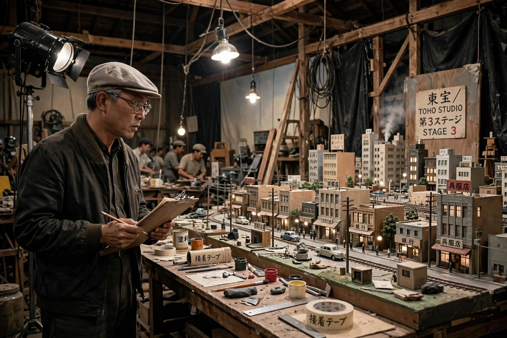

| Ishirō Honda | |
| Born | May 7, 1911, Asahi, Yamagata, Japan |
|---|---|
| Died | February 28, 1993 (aged 81), Setagaya, Tokyo, Japan |
| Occupation | Film director, screenwriter |
| Years active | 1934–1992 |
| Notable work | Godzilla, Rodan, Mothra, Matango |

Ishirō Honda (本多 猪四郎, Honda Ishirō; May 7, 1911 – February 28, 1993) was a Japanese film director best known as the creator, with special-effects director Eiji Tsuburaya, of the kaiju (giant monster) genre. He directed the original Godzilla (1954) and many of Toho's classic science-fiction films.
Honda studied art before joining PCL (later Toho) in 1933, where he became an assistant to Akira Kurosawa, beginning a lifelong friendship. Called up for military service three times, he served in China and was held as a prisoner of war; passing through the ruins of Hiroshima on his return to Japan left a lasting mark on his work.
After documentaries and dramas, Honda directed Godzilla (1954), a grave allegory of nuclear destruction that launched Japan's longest-running film franchise. With Tsuburaya he went on to make Rodan (1956), The Mysterians (1957), Mothra (1961), King Kong vs. Godzilla (1962), Matango (1963), and Ghidorah, the Three-Headed Monster (1964), balancing spectacle with humanist, anti-war themes. He also co-created the Ultraman television era through his work with Tsuburaya Productions.
In the 1980s Honda returned to assist Kurosawa on Kagemusha (1980) and Ran (1985). He died in 1993; his humanistic approach to the monster film has been widely reassessed and celebrated.